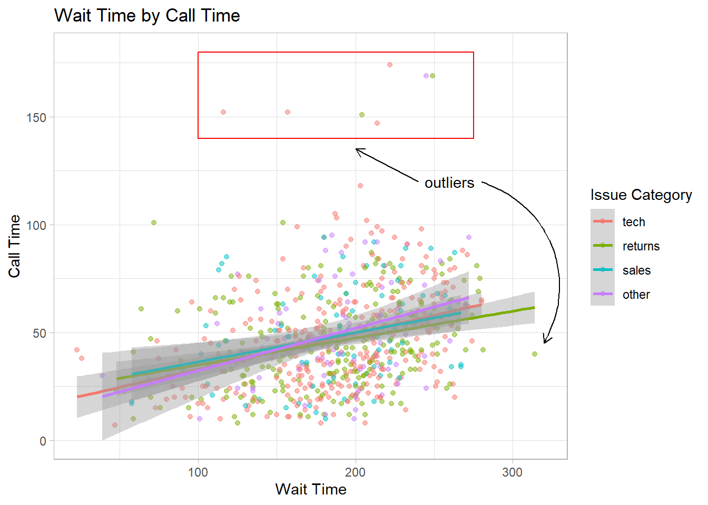

WARNING: Rtools is required to build R packages, but is not currently installed.
Please download and install Rtools 4.2 from https://cran.r-project.org/bin/windows/Rtools/ or https://www.r-project.org/nosvn/winutf8/ucrt3/.
Skipping install of 'waffle' from a github remote, the SHA1 (3f61463e) has not changed since last install.
Use `force = TRUE` to force installation
library(waffle) # for waffle plotstheme_set(theme_light())
For this blog post I will just be reproducing what I see before me
# update column specificationct <-cols(issue_category =col_factor(levels =c("tech", "returns", "sales", "other")))# load datasurvey_data <-read_csv(file ="data/survey_data.csv",col_types = ct)# create bar plotbar <-ggplot(data = survey_data, mapping =aes(x = issue_category,fill = issue_category)) +geom_bar(show.legend =FALSE) +labs(x ="Issue Category", y ="Count",title ="Calls by Issue Category")#create scatterplotpoint <-ggplot(data = survey_data, mapping =aes(x = wait_time, y = call_time,color = issue_category)) +geom_point(alpha =0.5) +geom_smooth(method = lm, formula = y~x) +labs(x ="Wait Time",y ="Call Time",color ="Issue Category",title ="Wait Time by Call Time")bar +# add left-justified text to the second barannotate(geom ="text",label ="Our goal is to\nreduce this\ncategory",x =1.65, y =150,hjust =0, vjust =1, color ="white", fontface ="bold",angle =45) +# add a centred label to the third barannotate(geom ="label",label ="Our goal is\nto increase this\ncategory",x =3, y =75,hjust =0.5, vjust =1, color =" darkturquoise", fontface ="bold")
And finally this is the last visualization the website/chapter provides.
point +# add a rectangle surrounding long call timesannotate(geom ="rect",xmin =100, xmax =275,ymin =140, ymax =180,fill ="transparent", color ="red") +# add a text labelannotate("text",x =260, y =120,label ="outliers") +# add an line with an arrow from the text to the boxannotate(geom ="segment", x =240, y =120, xend =200, yend =135,arrow =arrow(length =unit(0.5, "lines"))) +# add a curved line with an arrow # from the text to a wait time outlierannotate(geom ="curve", x =280, y =120, xend =320, yend =45,curvature =-0.5,arrow =arrow(length =unit(0.5, "lines")))

Just kidding we also have a frequency plot before your very eyes!
ggplot(survey_data, aes(x = wait_time)) +scale_x_continuous(name ="Wait time (seconds)",breaks =seq(0, 600, 60)) +geom_freqpoly(boundary =0, binwidth =15, color ="black")